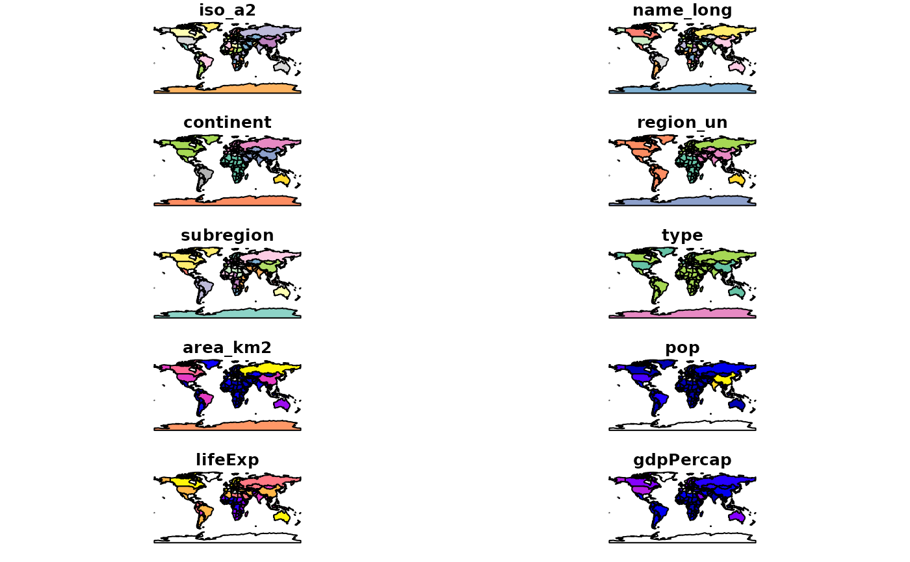

The object loaded is a sf object containing a world map data from Natural Earth with a few variables from World Bank
worldFormal class 'sf' [package "sf"]; the data contains a data.frame with 177 obs. of 11 variables:
iso_a2 character vector of ISO 2 character country codes
name_long character vector of country names
continent character vector of continent names
region_un character vector of region names
subregion character vector of subregion names
type character vector of type names
area_km2 integer vector of area values
pop integer vector of population in 2014
lifeExp integer vector of life expectancy at birth in 2014
gdpPercap integer vector of per-capita GDP in 2014
geom sfc_MULTIPOLYGON
The object is in geographical coordinates using the WGS84 datum.
See the rnaturalearth package: https://cran.r-project.org/package=rnaturalearth
if (requireNamespace("sf", quietly = TRUE)) {
library(sf)
data(world)
# or
world <- st_read(system.file("shapes/world.gpkg", package="spData"))
plot(world)
}
#> Reading layer `world' from data source
#> `/home/runner/work/_temp/Library/spData/shapes/world.gpkg'
#> using driver `GPKG'
#> Simple feature collection with 177 features and 10 fields
#> Geometry type: MULTIPOLYGON
#> Dimension: XY
#> Bounding box: xmin: -180 ymin: -89.9 xmax: 180 ymax: 83.64513
#> Geodetic CRS: WGS 84
